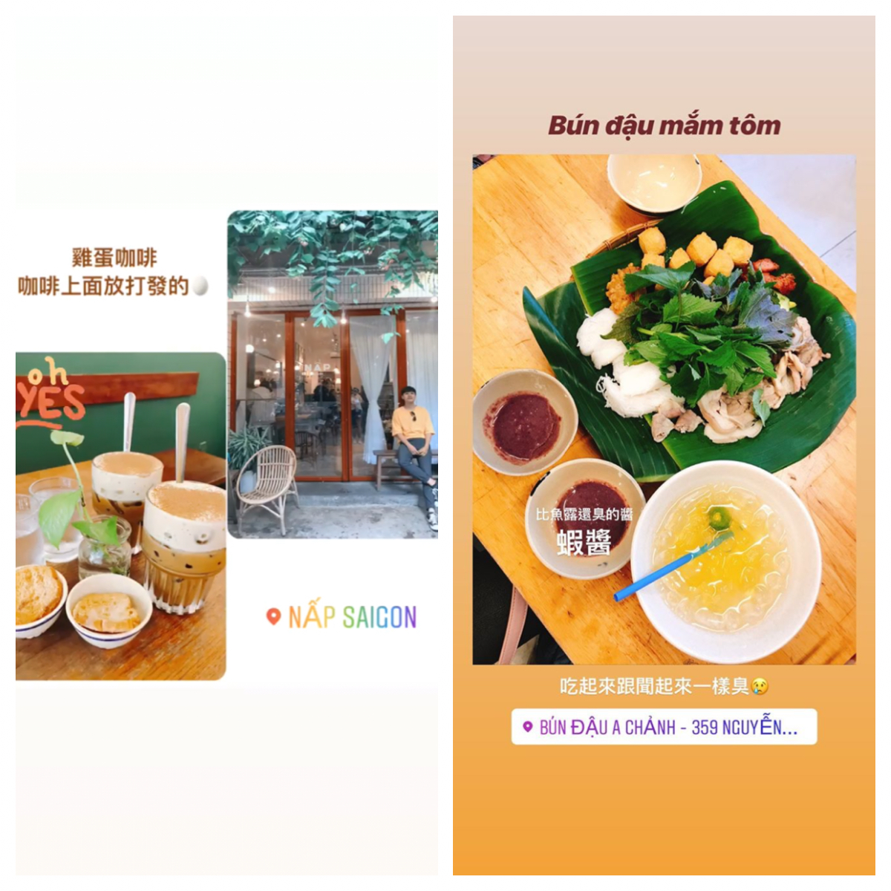
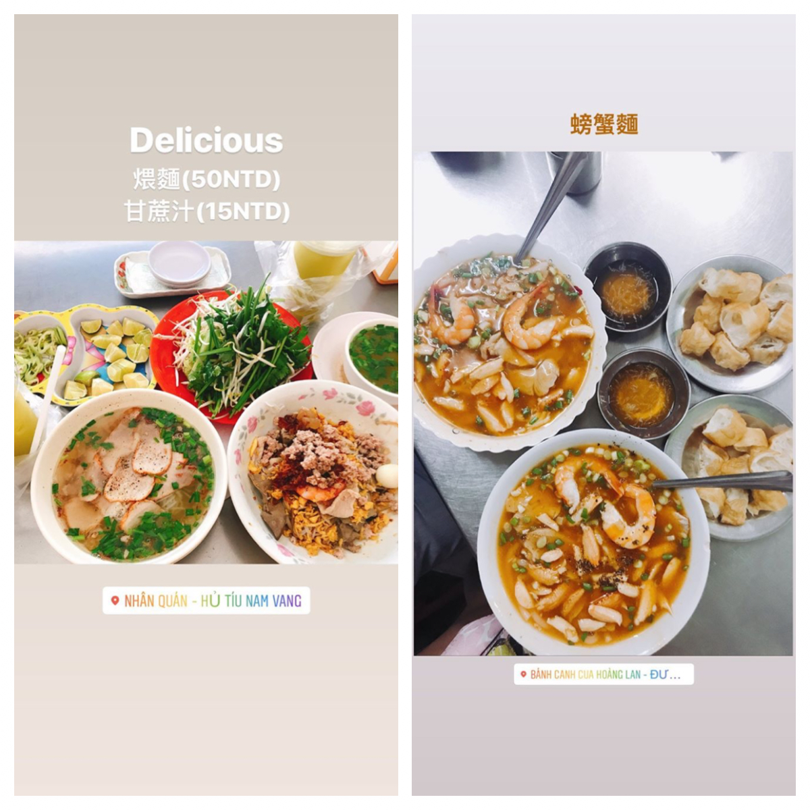
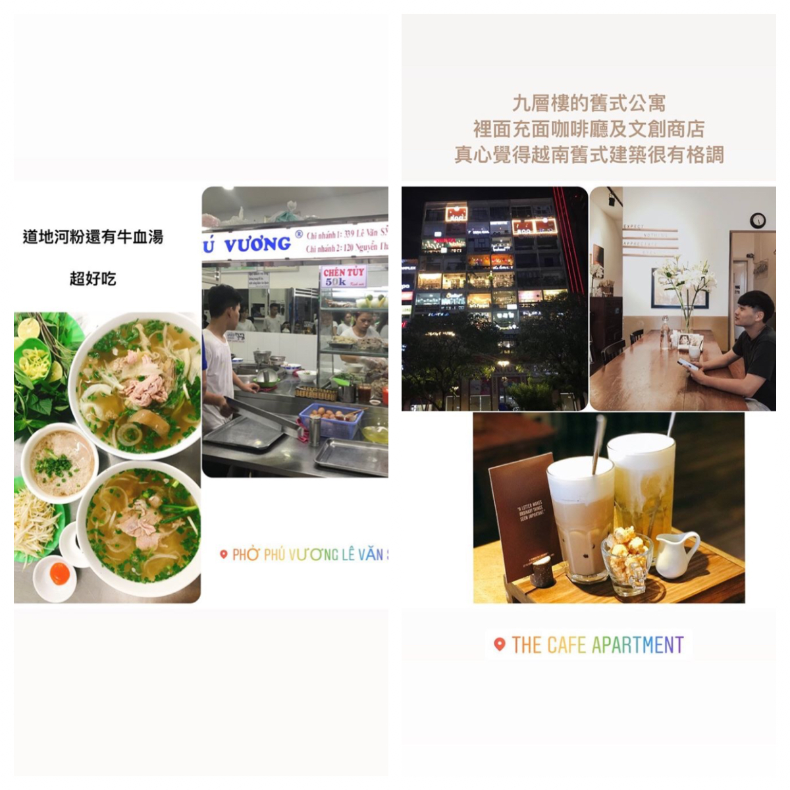
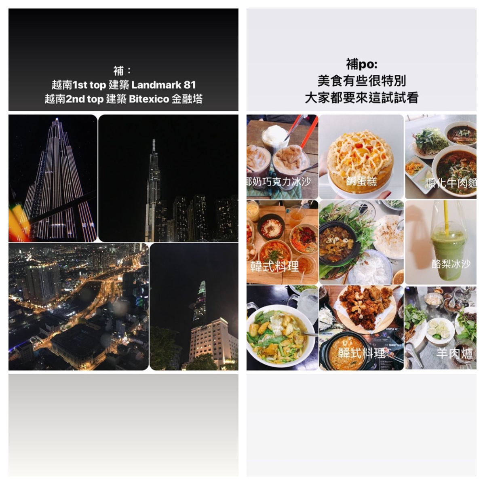

一週的越南🇻🇳旅程
過去印象的越南: 路上很多買炸昆蟲🐛、沒有什麼汽車、傳統市場很多
但來了才知道 其實跟台灣很像 摩托車很多 交通繁忙 商店攤販密密麻麻 許多舊式建築翻修後很有風味 文創產業盛行 年輕人多喜歡跟流行 而且很哈韓
而這裡不同的是
🏍️馬路超危險 摩托車亂鑽 喇叭按不停 地上垃圾多 路面坑洞較多 (保險業應該很適合在這邊）安全帽幾乎西瓜皮 而且沒擋風鏡 下雨超痛 還有每家店前都會有警衛幫忙移車
在路上不敢隨便拿手機出來 🚕搭Grab便宜 但記得要鎖車門（還是要看你使用的APP) 比台灣便宜很多
🍹飲料都滿甜的 食物很多要沾魚露 味道比較重
夜晚溫度比台灣涼 不會很悶熱
來這裡覺得大部分的人講話都滿輕聲細語 感覺脾氣很好😂
行程規劃
6/22 11點多放東西 吃河粉
6/23
- 9:30 吃早餐(烤肉飯)
- 10:30中央郵局 書街 西貢聖母大教堂(紅教堂) 濱城市場順便午餐、甜點
- 下午：市集、回家洗澡
- 6:00 跟朋友喝飲料吃晚餐 （咖啡公寓 歌劇院 阮惠步行街）
6/24
- 早點起來去第一郡喝咖啡、逛逛、買東東
- 回家洗澡
- 晚上 跟舅舅吃飯
6/25
- 早上8:30吃早餐(順化牛肉檬粉)完
- 10:00 去慈善機構
- 午餐：牛肉爐 回家
- 晚上 吃bun dau mam tom
- 去Bitexco金融塔
- 買飲料奶蓋回家喝
6/26
- 6:00 吃早餐(煨麵)
- 買福隆
- 前往頭頓
- 玩水
- 洗澡休息
- 下午去拍照
- 晚上吃海鮮 逛海灘 吃冰淇淋
6/27 頭頓（在去頭頓的前一天，吃壞了肚子）
- 早點起來看日出
- 回家洗澡去喝咖啡 吃早餐
- 去玩 拍照
- 晚上5:00 上車回西貢
- 洗澡 吃羊肉爐
- 咖啡公寓 歌劇院 阮惠步行街
6/28 遊樂園 買菜煮晚餐
6/29 for free
  
餐點：
bánh tráng trộn, bánh tráng cuộn, cơm cháy chà bông, bông lan trứng muối, ts tá lả, ts ali, ts tik tak, phúc long, bún đậu mắm tôm, nước mía, trà đào nhà hát tp, sinh tố, gỏi cuốn, lẩu dê

Hope to come back again~
To be continued…